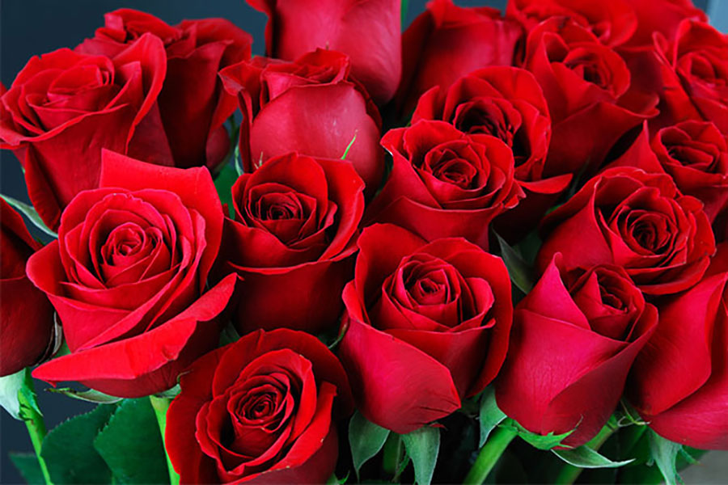
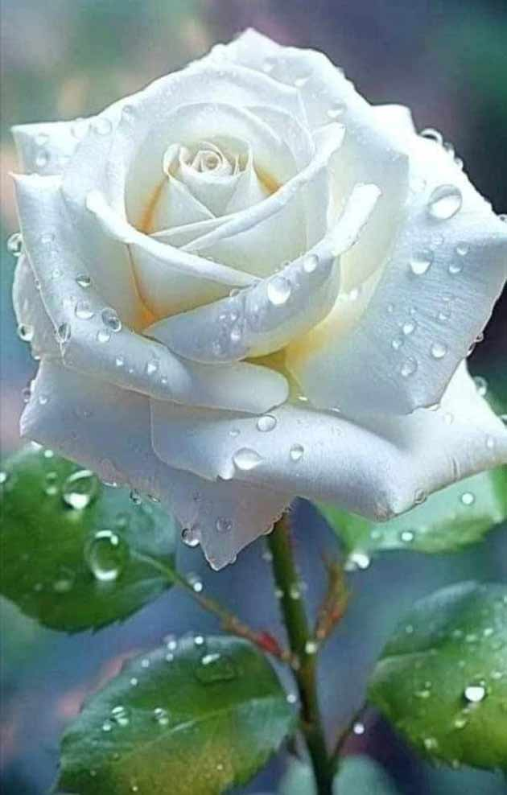
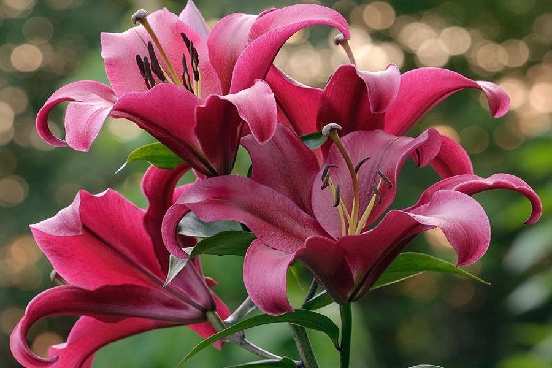

لاله سفید؛ نماد دوستی و صداقت این گل به دلیل پاکیزگی، زیبایی و ناباوری که به آن نسبت داده میشود، به عنوان نمادی از عشق، محبت، دوستی، صداقت، پاکیزگی و بیعیبی شناخته میشود. به علاوه، گل لاله سفید به عنوان یکی از گلهایی که به عنوان گل عروس انتخاب میشود، محبوبیت بسیاری نیز در میان جامعه دارد.

گل رز قرمز نشانهی یک عشق پر حرارت و شورانگیز است. به همین دلیل افرادی که میخواهند علاقهی خود را به محبوبشان اثبات کنند، به او گل رز قرمز هدیه میدهند. گل رز ذاتا نماد عشق و علاقه است و رنگ قرمز، نشانهی حرارت و شور عاشقی است. در نتیجه ترکیب این دو با یکدیگر، اصلیترین نماد یک عشق خالصانه و عمیق است.

گل رز سفید نماد پاکی، خلوص و معصومیت است و عشق پاک را نشان می دهد. این گل را برای احترام و قدردانی هدیه می دهند. رز سفید به رز عروس هم معروف است و در دسته گل عروس و گل آرایی ماشین عروس از آن استفاده می شود. رز سفید را می توان در مراسم یادبود نیز برای ابراز احترام هدیه داد.

لیلیوم این گل زیبا نماد پاکی، زیبایی و اعتماد است. لیلیوم سفید نماد فروتنی و نجابت، لیلیوم نارنجی نماد افتخار و اشتیاق و لیلیوم زرد نماد خوشنودی، سلامتی و بهبودی است. اگر به مراسم عروسی می روید، در دسته گل خود از گل لیلیوم صورتی استفاده کنید چون رنگ صورتی آن نماد خوشبختی است.

گل آفتابگردان نشاندهنده دوستی و شادی است و میتواند برای تبریک و جشنها هدیه داده شود. این گل نماد عشق و محبت است و به عنوان هدیهای برای اعضای خانواده بسیار مناسب است. گل آفتابگردان میتواند نشانهای از قدردانی و احترام در محیط کار باشد. این گل به دلیل رنگ زرد و شادابش، برای ابراز عشق و محبت به محبوبتان بسیار زیباست.